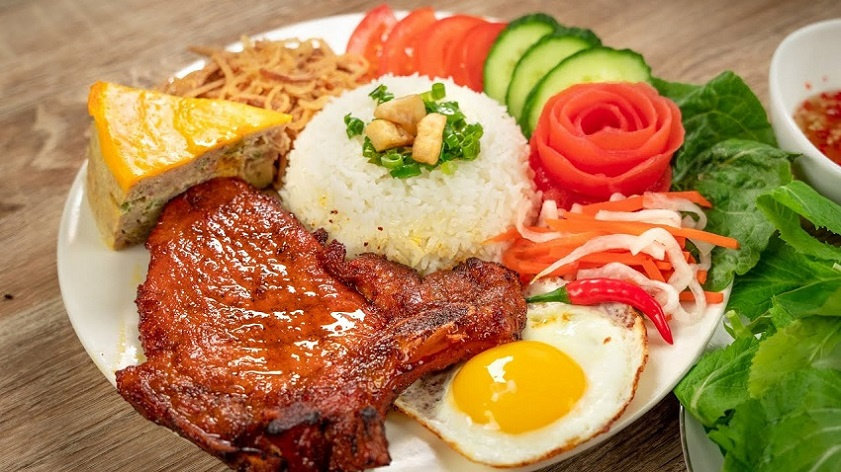
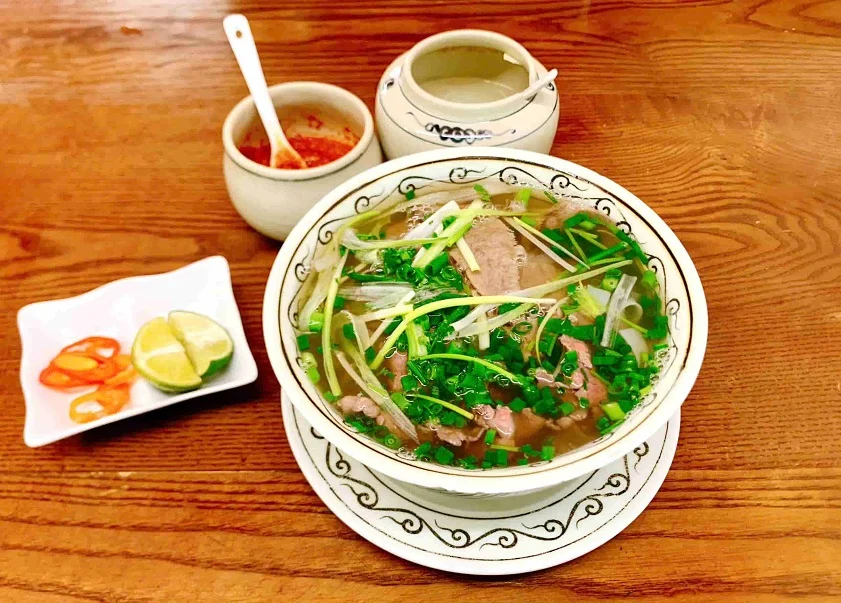
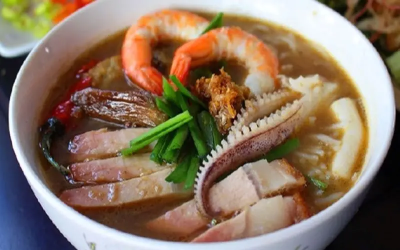

About Ho Chi Minh City
Ho Chi Minh City (commonly known as Saigon) is Vietnam's largest, most populous, and dynamic economic hub, located in the south. Known for its high-octane energy, the city blends French colonial architecture with modern skyscrapers and ancient temples. As a major commercial center, it offers intense street life, vibrant nightlife, and a rich, complex history.
Local Cuisine

Broken Rice
A signature dish featuring grilled pork, steamed egg cake, and seasoned fish sauce.

Pho
The world-famous aromatic noodle soup served with fresh herbs and tender beef slices.

Fermented Fish Soup
A bold, savory specialty from the Mekong Delta region made with fresh seafood.